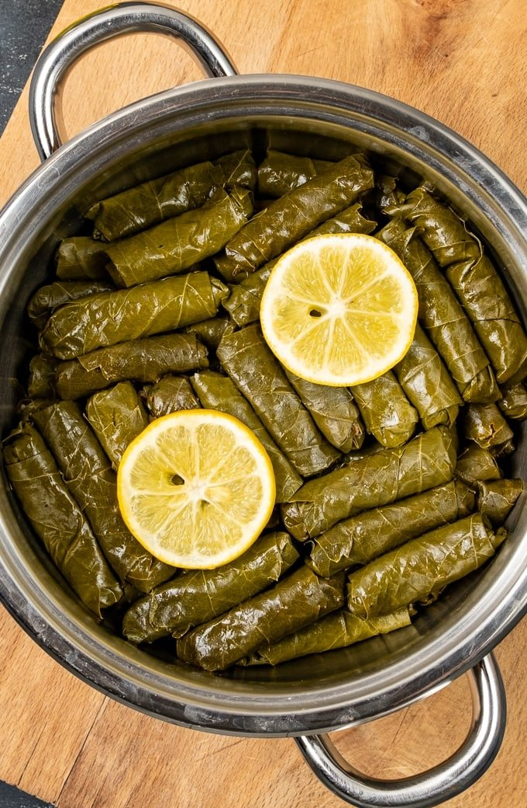

Dolma

Description
Dolma originates from the Middle East, although many other regions have created their own iteration of the dish. It is a stuffed grape leaf, usually with rice and meat.
Ingredients
- Jarred Grape Leaves
- Ground Beef
- Seasoned Rice
- Parsley, Dill, and Mint
Steps
- Prepare your grape leaves by draining in a colander.
- Prepare the stuffing by rinsing your rice. While that is soaking, cook your meat. Also saute your onions to a brown color. Combine the rice, meat and herbs and that is your stuffing.
- Stuff and roll the grape leaves
- Assemble the grape leaves in a pot neatly, covering the pots circumference.
- Cook them on a stovetop on medium heat for 30 minutes until the liquid has been absorbed.
- Let rest for 30 minutes, uncovered, before serving.